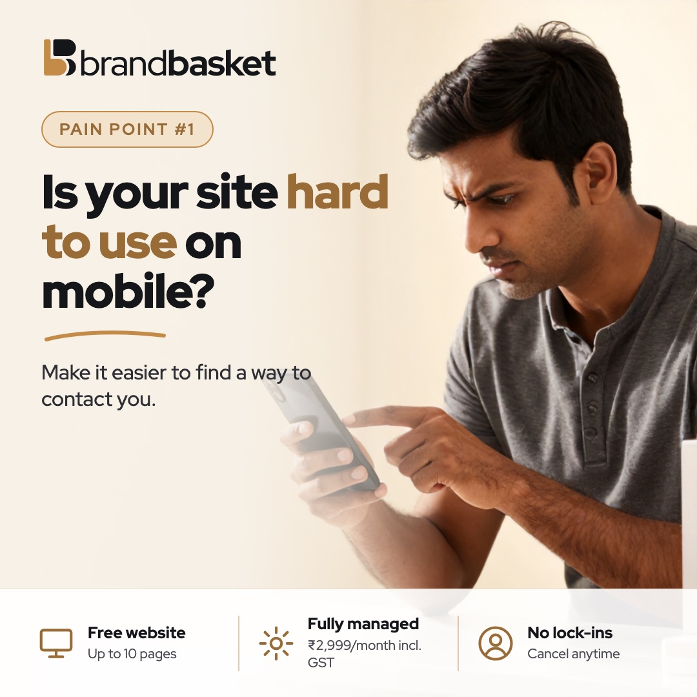
w02-d1 · 2026-11-05T10:00:00+05:30
Customers struggle to use the business website on a phone.
Does your website feel awkward to use on a phone?
A customer might be out and about, trying to check your business or get in touch. If the page is difficult to use, they may give up before they find the right details.
Brandbasket builds professional websites for local businesses, with click-to-call, WhatsApp and enquiry forms. The build is ₹0 for up to 10 pages, then hosting, security and updates are ₹2,999 a month incl. GST. Ask us about a site that makes your contact options easy to find.
Start your free website at brandbasket.in (link in bio).
#SmallBusinessIndia #LocalBusiness #BusinessWebsite #MobileWebsite #IndianSalon #WebsiteDesign #Brandbasket
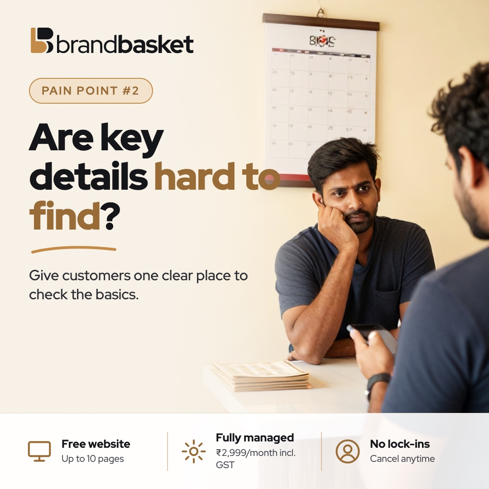
w02-d2 · 2026-11-06T10:00:00+05:30
Customers keep calling to ask for basic business details that could be easy to find online.
“What time do you open? Where are you? What do you offer?”
When customers have to call just to get basic details, it can interrupt a busy day. And if your hours, location or services are not clearly presented, people may not know what to expect before they visit.
Brandbasket builds professional websites with up to 10 pages, so key information can have a clear place. Your website is live in 7 working days. The monthly plan is ₹2,999 incl. GST and includes hosting, SSL, backups, security updates, uptime monitoring and a monthly health report.
Start your free website at brandbasket.in (link in bio).
#LocalBusinessIndia #SmallBusinessIndia #CafeIndia #BusinessWebsite #CustomerInformation #WebsiteDesign #Brandbasket
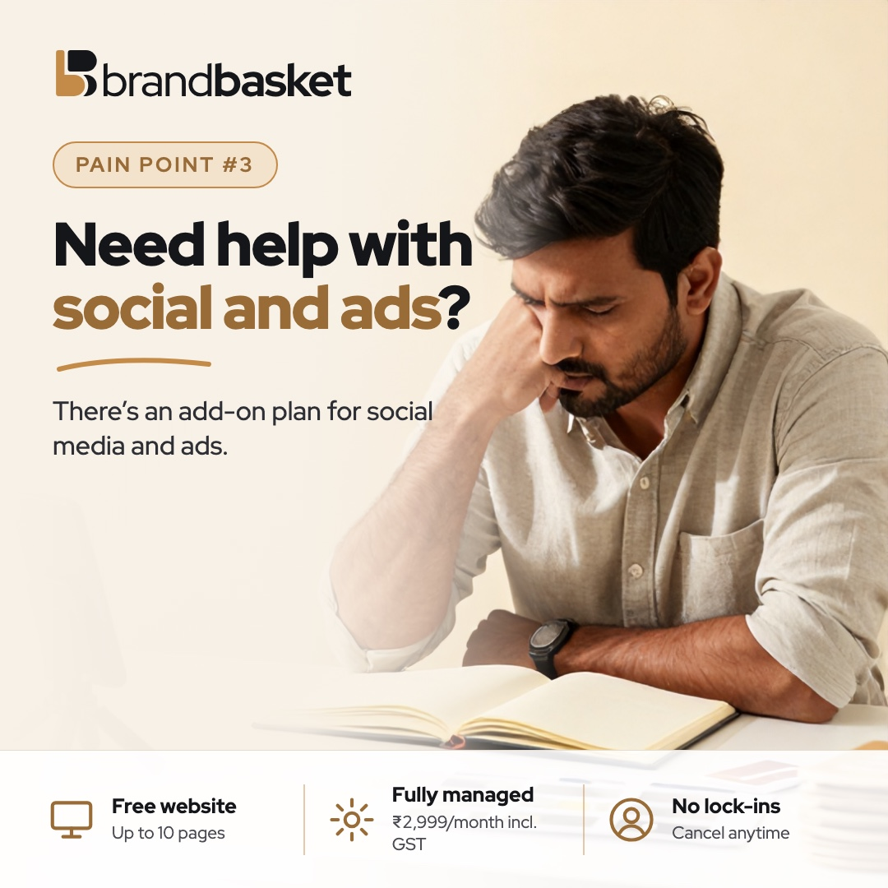
w02-d3 · 2026-11-07T10:00:00+05:30
A busy owner wants help managing social media and ads but has little time for another task.
There are only so many hours in a business day.
“ I want to keep up with social media and ads, but I’m already handling customers, staff and the shop.” If that sounds familiar, you may want help with those tasks rather than another item on your to-do list.
Brandbasket offers a Social Media and Ads add-on plan for ₹9,999/month. You can also start with a professional website built for ₹0, with up to 10 pages, then hosted and supported for ₹2,999 a month incl. GST. Choose the service that fits what you need.
Start your free website at brandbasket.in (link in bio).
#SmallBusinessIndia #SocialMediaIndia #LocalBusiness #BusinessOwner #DigitalMarketingIndia #IndianShops #Brandbasket
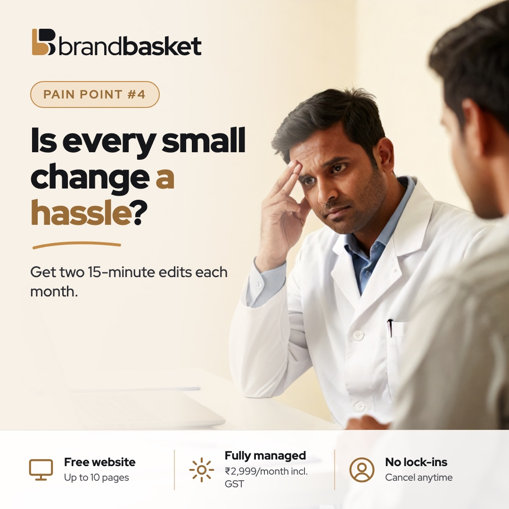
w02-d4 · 2026-11-08T10:00:00+05:30
Making small website changes feels difficult when the owner has to handle every detail alone.
“I just need to change one small detail, but I don’t know how to do it.”
Business information changes. A phone number, a service detail or a photo may need updating, but figuring out the website yourself can take time you do not have.
Brandbasket’s ₹2,999 a month incl. GST plan includes two edits each month, up to 15 minutes each, along with hosting, SSL, backups, security updates, uptime monitoring and a monthly health report. Human support is available if you need help. No lock-ins; cancel anytime.
Start your free website at brandbasket.in (link in bio).
#SmallBusinessIndia #LocalBusiness #WebsiteSupport #BusinessWebsite #IndianDentist #BusinessOwner #Brandbasket
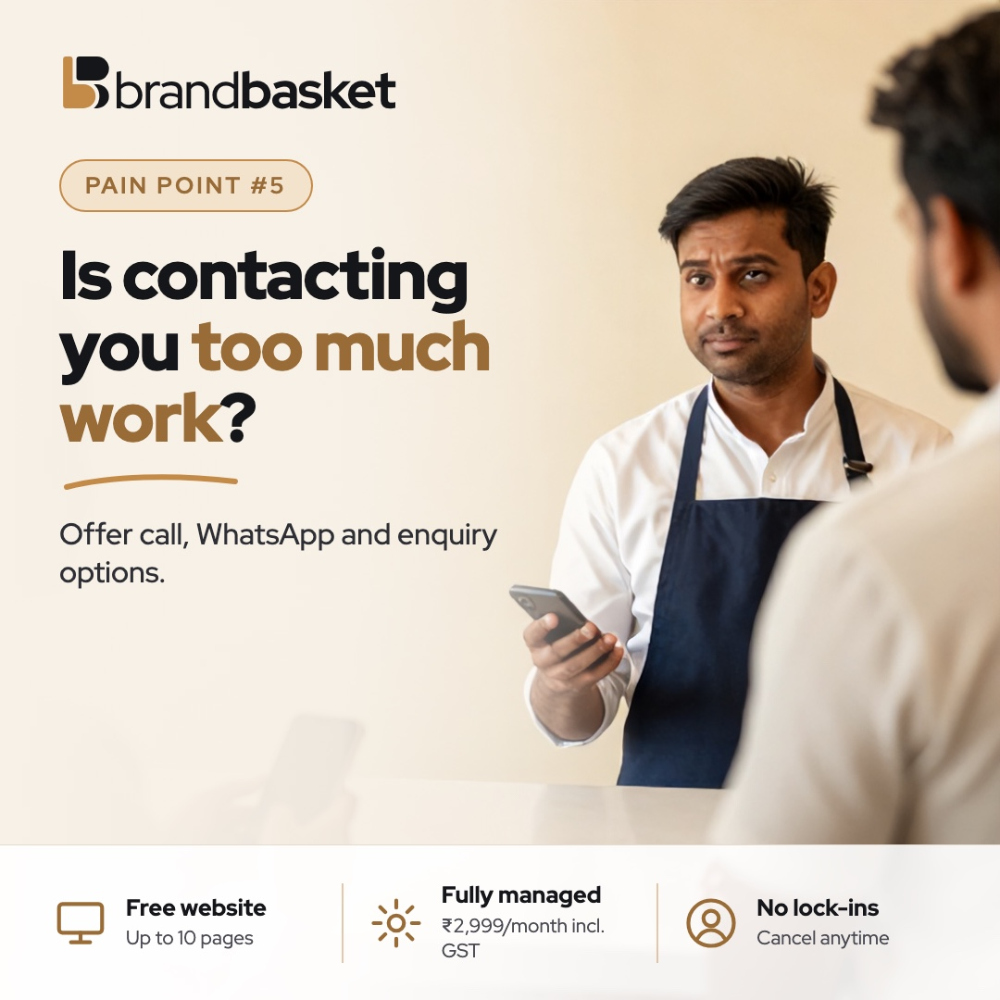
w02-d5 · 2026-11-09T10:00:00+05:30
Customers have no simple way to contact the business when the owner is busy serving someone else.
“I’m with a customer. How can someone else reach me?”
When you are serving people in person, you may not be able to answer every call right away. Customers should have a clear way to get in touch without guessing which channel to use.
Brandbasket websites can include click-to-call, WhatsApp and enquiry forms. The website build is ₹0 for up to 10 pages and goes live in 7 working days. After that, hosting, SSL, backups, security updates and more are covered for ₹2,999 a month incl. GST.
Start your free website at brandbasket.in (link in bio).
#LocalBusinessIndia #SmallBusinessIndia #CustomerEnquiries #WhatsAppBusiness #BusinessWebsite #IndianRestaurant #Brandbasket
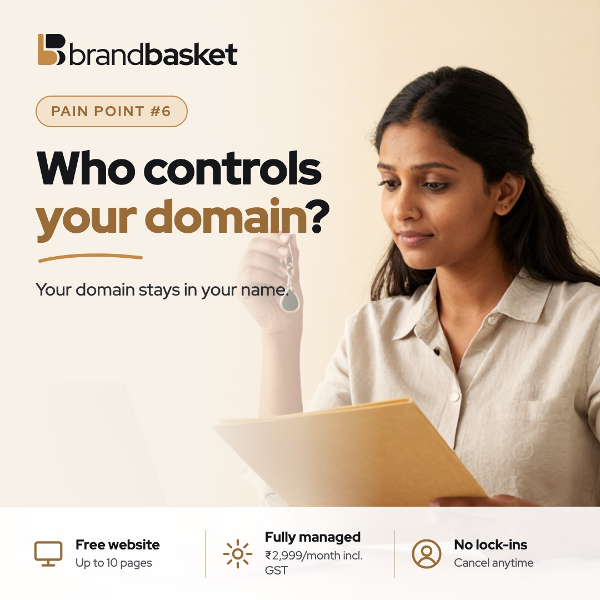
w02-d6 · 2026-11-10T10:00:00+05:30
The business owner is unsure whether the website domain will remain theirs if they change providers.
“If I stop working with a provider, will I still control my domain?”
It is reasonable to want clarity about something as important as your business’s web address. Before starting a website project, know whose name the domain is in and what happens if you decide to leave.
With Brandbasket, the domain stays in your name. The website build is ₹0 for up to 10 pages, then the monthly plan is ₹2,999 incl. GST for hosting, SSL, backups, security updates, uptime monitoring and support. There are no lock-ins; cancel anytime.
Start your free website at brandbasket.in (link in bio).
#SmallBusinessIndia #LocalBusiness #DomainName #BusinessWebsite #WebsiteOwnership #IndianBusiness #Brandbasket
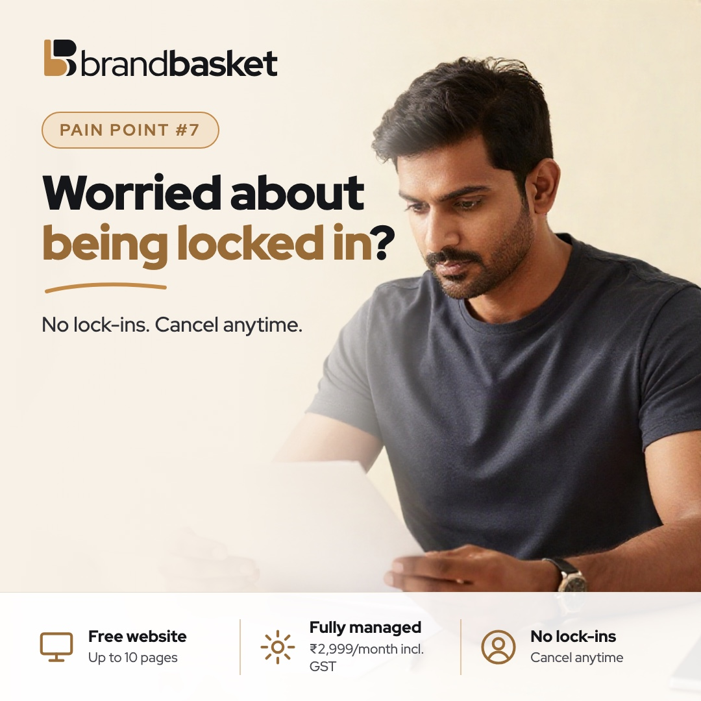
w02-d7 · 2026-11-11T10:00:00+05:30
A business owner wants a website but is wary of signing up for a long-term contract.
“What if I sign up and later decide this isn’t right for my business?”
A website service should be clear about what it costs and how you can leave. You should not have to guess whether you are committing to a long contract.
Brandbasket builds your website for ₹0, up to 10 pages. Once it is live, hosting, SSL, backups, security updates, uptime monitoring, two monthly edits and a health report are included for ₹2,999 a month incl. GST. There are no lock-ins, and you can cancel anytime.
Start your free website at brandbasket.in (link in bio).
#SmallBusinessIndia #LocalBusiness #NoLockIn #BusinessWebsite #WebsitePlans #IndianBusinessOwner #Brandbasket
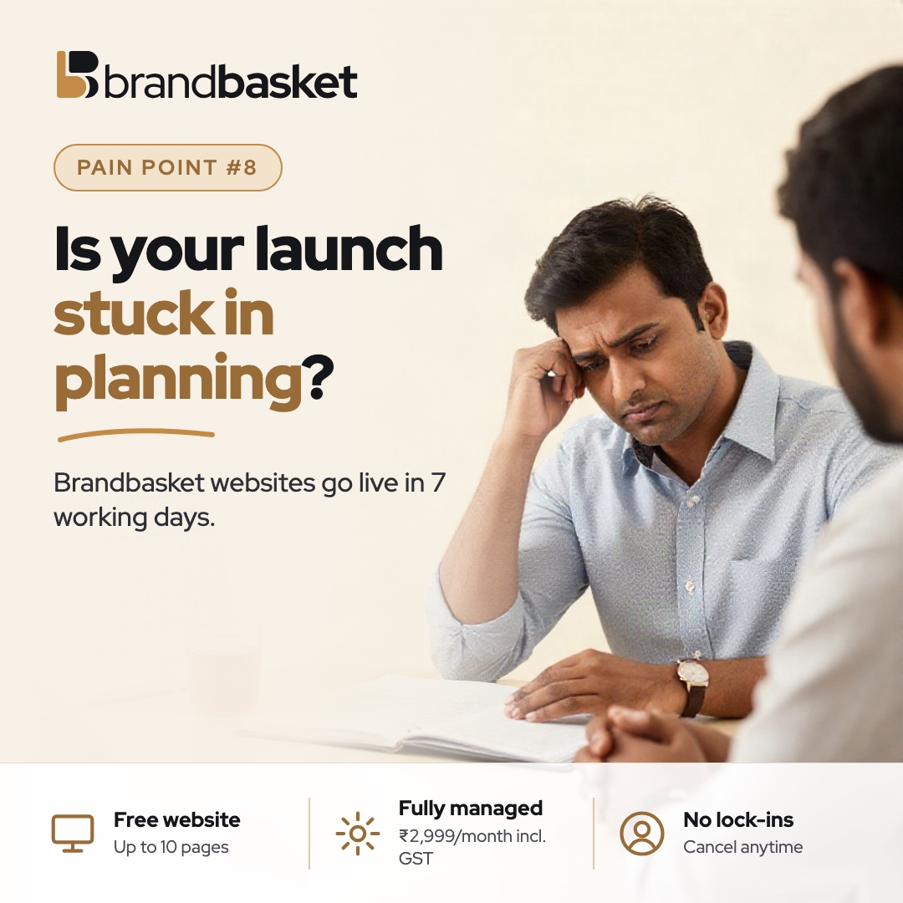
w02-d8 · 2026-11-12T10:00:00+05:30
The website project keeps getting postponed, leaving the owner unsure when it will be ready.
“We keep talking about a website, but when will it actually be ready?”
For a busy local business, a project that stays in planning is hard to fit around daily work. A clear timeline makes it easier to know what to expect.
Brandbasket websites go live in 7 working days. The build is ₹0 for up to 10 pages. After launch, hosting, SSL, backups, security updates, uptime monitoring, two monthly edits and a health report are included for ₹2,999 a month incl. GST. Your domain stays in your name.
Start your free website at brandbasket.in (link in bio).
#SmallBusinessIndia #LocalBusiness #WebsiteLaunch #CoachingInstitute #BusinessWebsite #IndianBusiness #Brandbasket
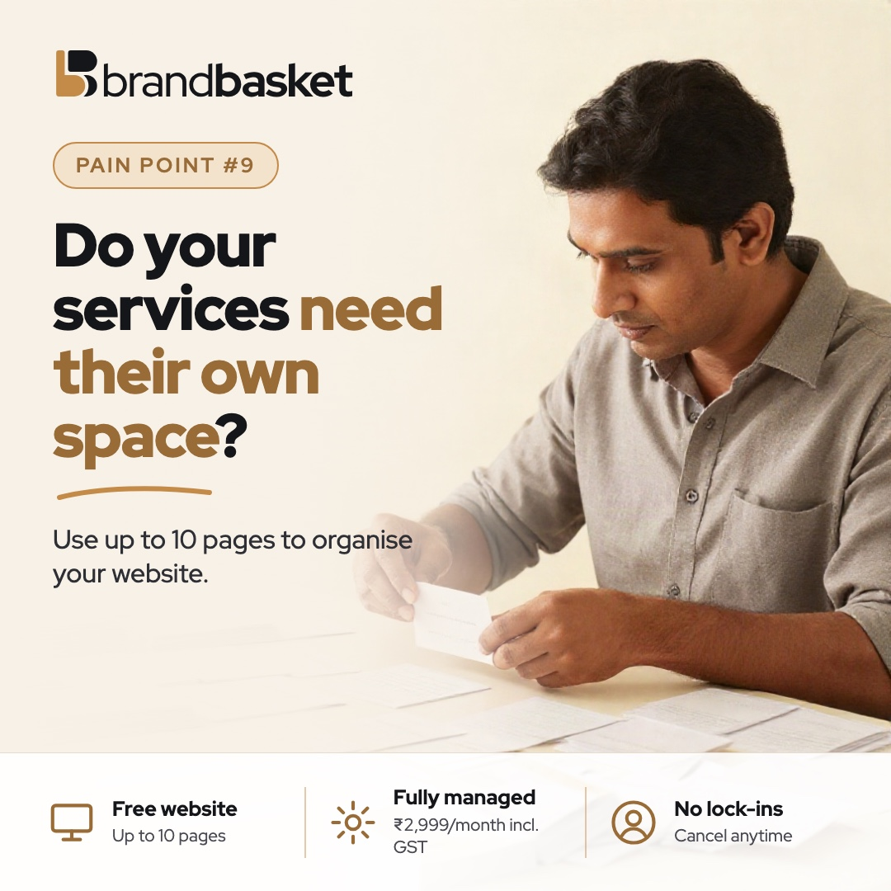
w02-d9 · 2026-11-13T10:00:00+05:30
The owner has several services but finds it difficult to give each one clear space on the website.
“We offer several services, but the website makes them feel jumbled together.”
When every offering is squeezed into one place, customers may find it harder to understand what your business does. Giving information a clear structure can make your website easier to browse.
Brandbasket builds professional websites with up to 10 pages, so you can organise your business information across the site. The build is ₹0 and the site goes live in 7 working days. Hosting, SSL, backups, security updates and more are ₹2,999 a month incl. GST.
Start your free website at brandbasket.in (link in bio).
#LocalBusinessIndia #SmallBusinessIndia #ServiceBusiness #BusinessWebsite #IndianSalon #WebsiteDesign #Brandbasket
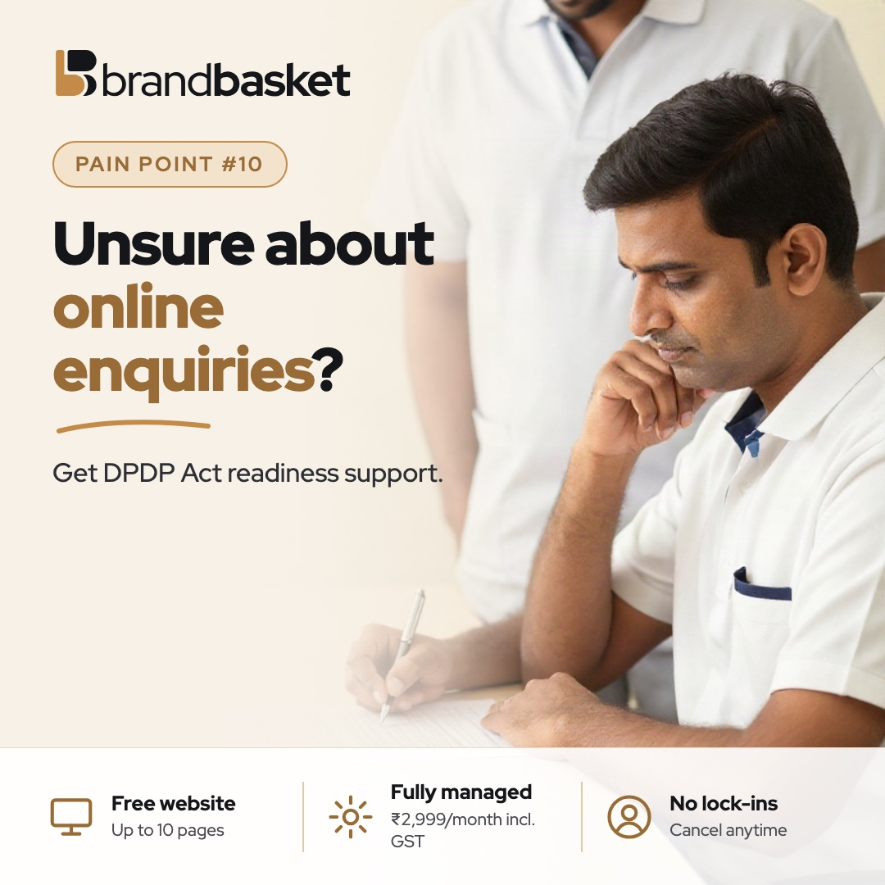
w02-d10 · 2026-11-14T10:00:00+05:30
A business owner is unsure what to consider when collecting customer enquiries online.
“I want customers to enquire online, but I’m not sure what I should think about when collecting their details.”
It is sensible to ask questions before adding an online enquiry form to your business website. You may want guidance on what to consider around the DPDP Act and customer information.
Brandbasket offers DPDP Act readiness support and can build a website with enquiry forms, click-to-call and WhatsApp options. The build is ₹0 for up to 10 pages; the monthly website plan is ₹2,999 incl. GST. Readiness support is guidance, not a promise of legal compliance.
Start your free website at brandbasket.in (link in bio).
#SmallBusinessIndia #LocalBusiness #DPDPAct #OnlineEnquiries #BusinessWebsite #IndianBusiness #Brandbasket
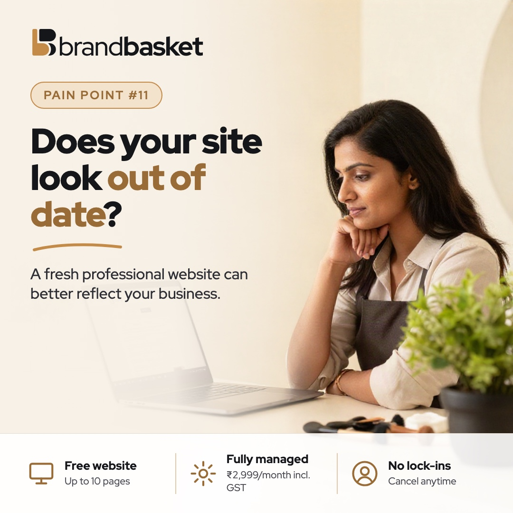
w02-d11 · 2026-11-15T10:00:00+05:30
The website’s dated look no longer reflects the business as it is today.
Your business has moved on. Has your website?
A dated design can give visitors the wrong impression of the business you run today. You may have updated your space, your services or the way you work, while the website still looks like an earlier version of you.
Brandbasket builds a professional website for ₹0, with up to 10 pages, and gets it live in 7 working days. Hosting, SSL, backups, security updates and uptime monitoring are ₹2,999 a month incl. GST.
Start your free website at brandbasket.in (link in bio).
#SmallBusinessIndia #LocalBusiness #WebsiteDesign #SalonIndia #BusinessWebsite #Brandbasket
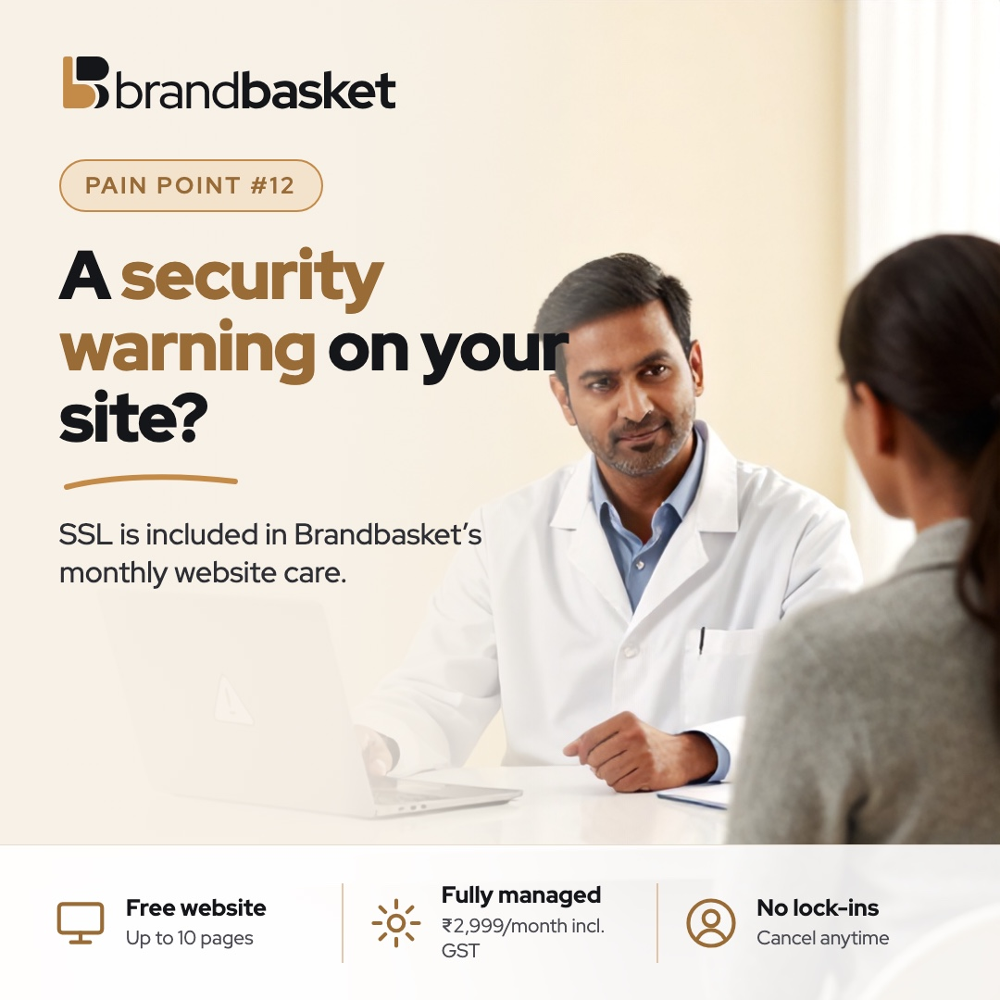
w02-d12 · 2026-11-16T10:00:00+05:30
A browser’s security warning on the current website can make visitors hesitate.
Would you pause if a website looked unsafe?
A security warning can make a visitor think twice before reading about a clinic, shop or service. For a small business, that moment of doubt is worth taking seriously, even if the site is otherwise working.
Brandbasket includes SSL with website hosting, backups, security updates and uptime monitoring for ₹2,999 a month incl. GST. The website build is ₹0 and can include up to 10 pages. No claims about rankings or results—just the practical website essentials in one monthly plan.
Start your free website at brandbasket.in (link in bio).
#SmallBusinessIndia #WebsiteSecurity #SSL #DentistIndia #LocalBusiness #Brandbasket
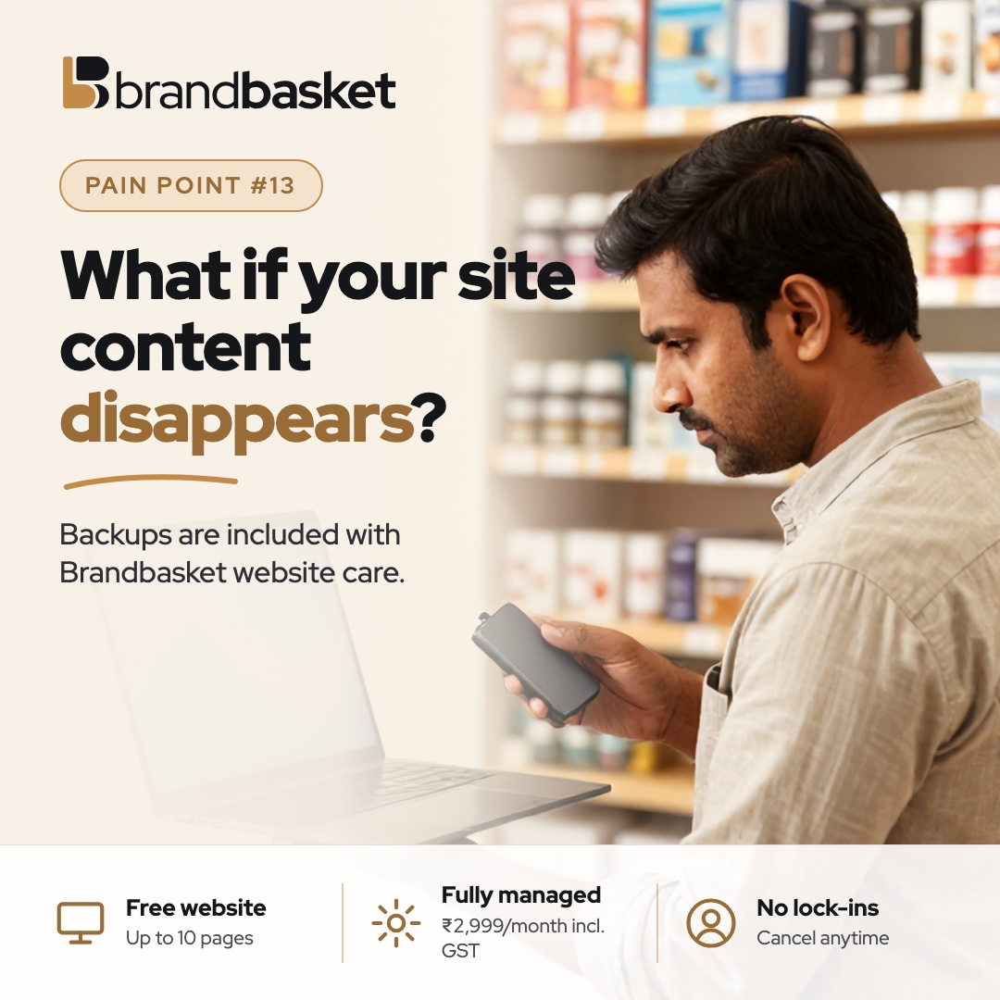
w02-d13 · 2026-11-17T10:00:00+05:30
The owner has no clear way to recover website content if it is accidentally lost.
A website can hold useful information about your business. If something goes wrong, would you know whether there is a backup?
Accidental loss of website content can be stressful, especially when you have other work to handle. It helps to know that backups are part of the website care, rather than an extra task to remember yourself.
Brandbasket builds your website for ₹0 and includes backups, hosting, SSL, security updates and uptime monitoring for ₹2,999 a month incl. GST. You also get a monthly health report, so you have a regular view of your site’s care.
Start your free website at brandbasket.in (link in bio).
#SmallBusinessIndia #WebsiteBackup #ShopOwner #BusinessWebsite #LocalBusiness #Brandbasket
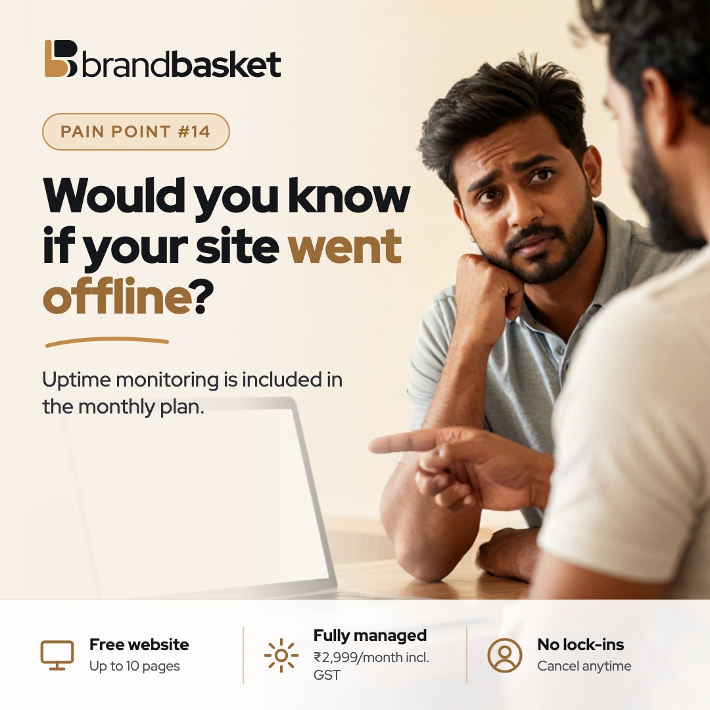
w02-d14 · 2026-11-18T10:00:00+05:30
The owner may only find out the website is offline after someone mentions it.
A website can go offline without the owner noticing right away.
That can be an unsettling thought when you are busy running a café, clinic or shop. You may not be checking the site throughout the day, and you do not want to rely only on someone else to tell you there is a problem.
Brandbasket includes uptime monitoring with hosting, SSL, backups and security updates for ₹2,999 a month incl. GST. The website itself is built for ₹0 and goes live in 7 working days. It is practical website care without having to keep watch over the technical side yourself.
Start your free website at brandbasket.in (link in bio).
#SmallBusinessIndia #WebsiteMonitoring #CafeIndia #LocalBusiness #WebsiteCare #Brandbasket
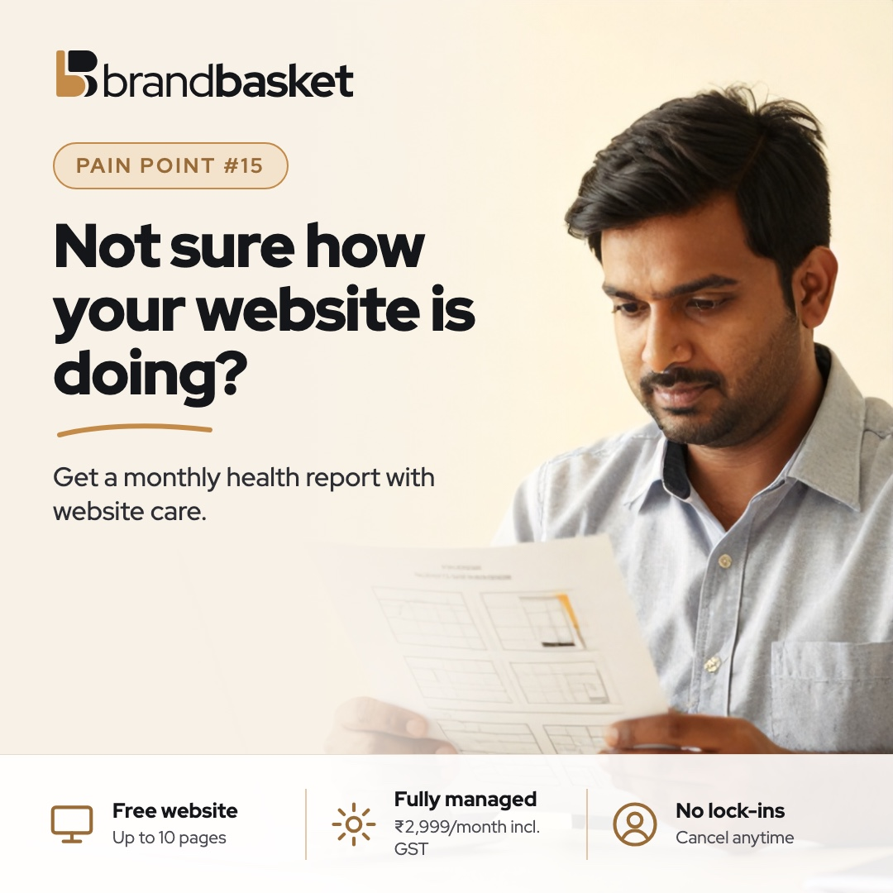
w02-d15 · 2026-11-19T10:00:00+05:30
The owner wants a regular, understandable update on the website’s health.
You should not have to guess whether your website is being looked after.
If no one tells you what has been checked, it can be hard to feel confident about the site’s day-to-day health. A simple regular update gives you a clearer picture without asking you to learn the technical details.
Brandbasket includes a monthly health report with hosting, SSL, backups, security updates and uptime monitoring. The monthly plan is ₹2,999 incl. GST. The website build is ₹0, with up to 10 pages, and it can be live in 7 working days.
Start your free website at brandbasket.in (link in bio).
#SmallBusinessIndia #WebsiteHealth #CoachingInstitute #BusinessWebsite #LocalBusiness #Brandbasket
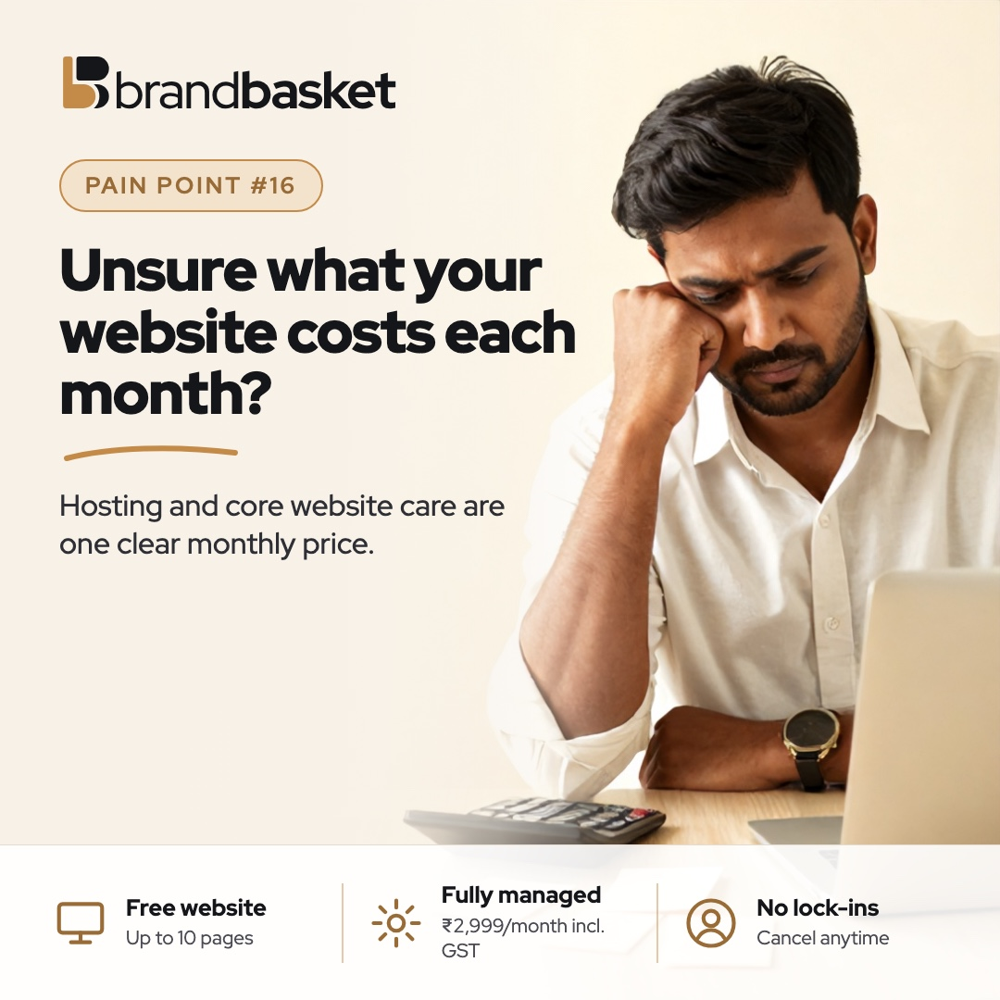
w02-d16 · 2026-11-20T10:00:00+05:30
Separate charges for website essentials make it hard to understand the ongoing cost.
Website costs can feel unclear when the essentials are priced separately.
You may be trying to work out what hosting, SSL, backups or security updates will add to the bill. For a busy owner, it is useful to know what the monthly plan covers before getting started.
Brandbasket’s website care is ₹2,999 a month incl. GST. It covers hosting, SSL, backups, security updates, uptime monitoring, two edits a month of 15 minutes each, and a monthly health report. The website build is ₹0, with up to 10 pages.
Start your free website at brandbasket.in (link in bio).
#SmallBusinessIndia #RestaurantIndia #WebsiteCosts #LocalBusiness #BusinessWebsite #Brandbasket
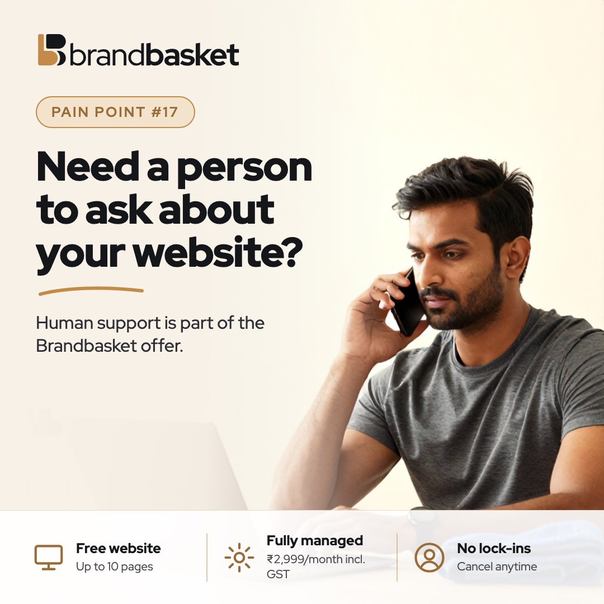
w02-d17 · 2026-11-21T10:00:00+05:30
The owner has a website question but does not know who they can ask for help.
When a website question comes up, it helps to know there is a person to ask.
You are busy running your business. You may not want to spend your evening searching for technical answers or trying to work out what to do next on your own.
Brandbasket offers human support alongside a professional website built for ₹0. The ₹2,999 monthly plan incl. GST covers hosting, SSL, backups, security updates, uptime monitoring, two 15-minute edits a month and a monthly health report. No lock-ins; cancel anytime.
Start your free website at brandbasket.in (link in bio).
#SmallBusinessIndia #GymIndia #WebsiteSupport #LocalBusiness #BusinessWebsite #Brandbasket
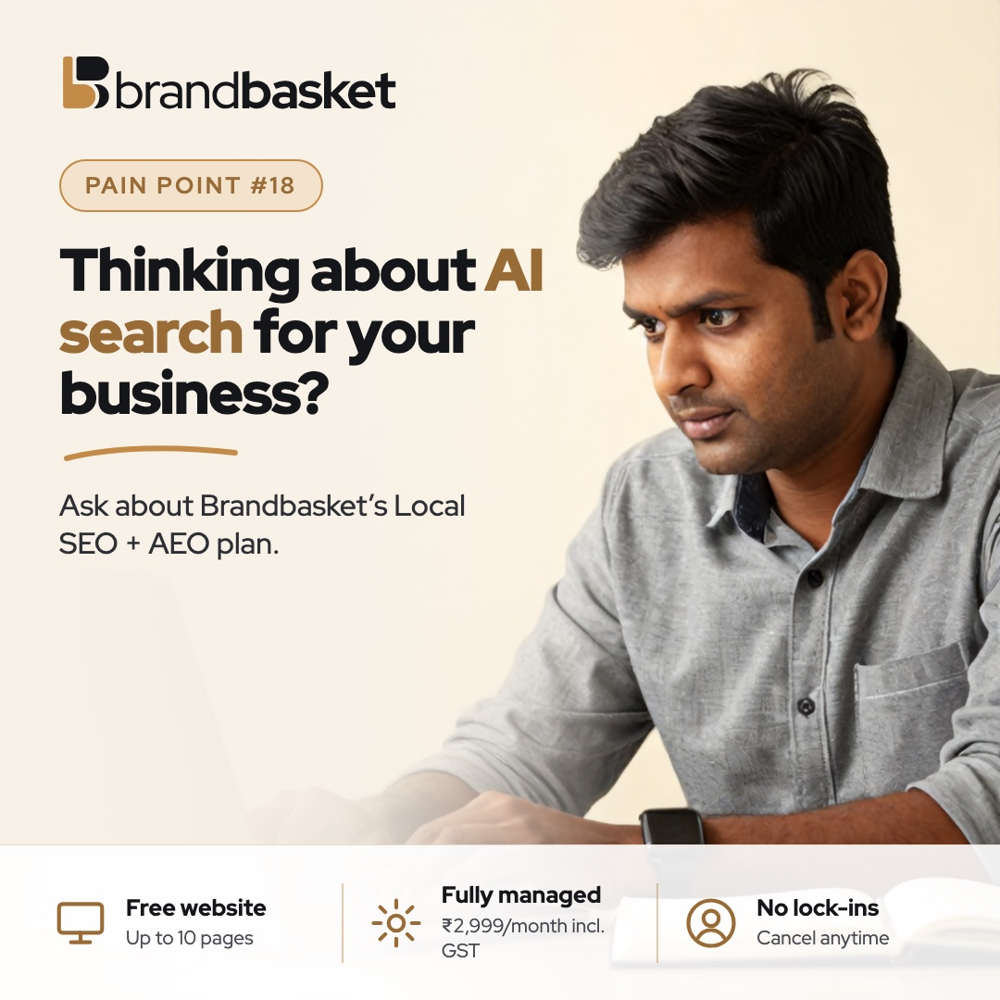
w02-d18 · 2026-11-22T10:00:00+05:30
The business owner is unsure how to prepare their website for AI-generated answers.
Search is changing, and it can be hard to know what to do next.
If you have heard about AI-generated answers but are unsure how local businesses can prepare, you do not have to guess at the terms or make promises about where your business will appear.
Brandbasket offers a Local SEO + AEO add-on plan for ₹24,999 a month. It is separate from the professional website build, which is ₹0, and the website care plan at ₹2,999 a month incl. GST. No one can promise a particular ranking or placement.
Start your free website at brandbasket.in (link in bio).
#SmallBusinessIndia #LocalSEO #AEO #CoachingInstitute #DigitalPresence #Brandbasket
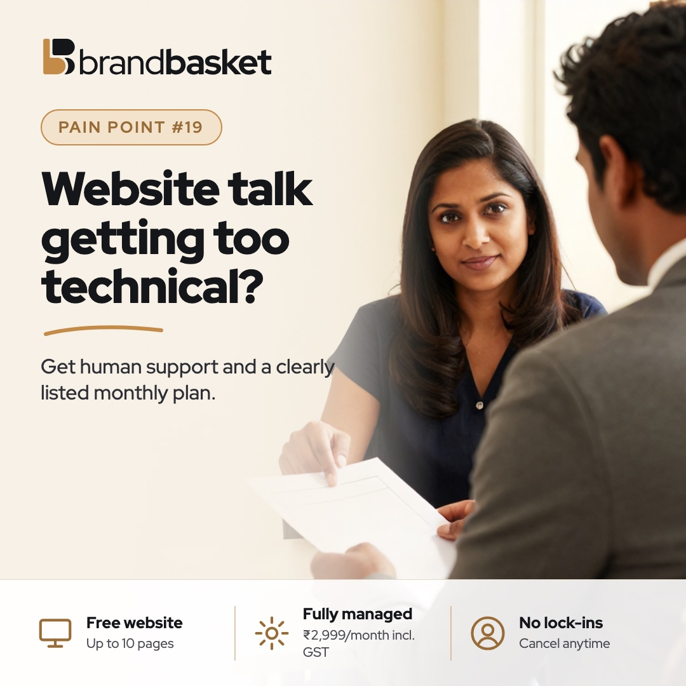
w02-d19 · 2026-11-23T10:00:00+05:30
A business owner wants to understand the website service without being left to decode technical jargon.
You run a business, not a web development team.
When a website conversation is full of unfamiliar terms, it can be difficult to decide what you actually need. It is reasonable to want clear information and someone you can ask when a question comes up.
Brandbasket provides human support and lists what the monthly plan includes: hosting, SSL, backups, security updates, uptime monitoring, two 15-minute edits a month and a monthly health report. It costs ₹2,999 a month incl. GST. The build is ₹0, with up to 10 pages.
Start your free website at brandbasket.in (link in bio).
#SmallBusinessIndia #SalonIndia #WebsiteHelp #LocalBusiness #BusinessWebsite #Brandbasket
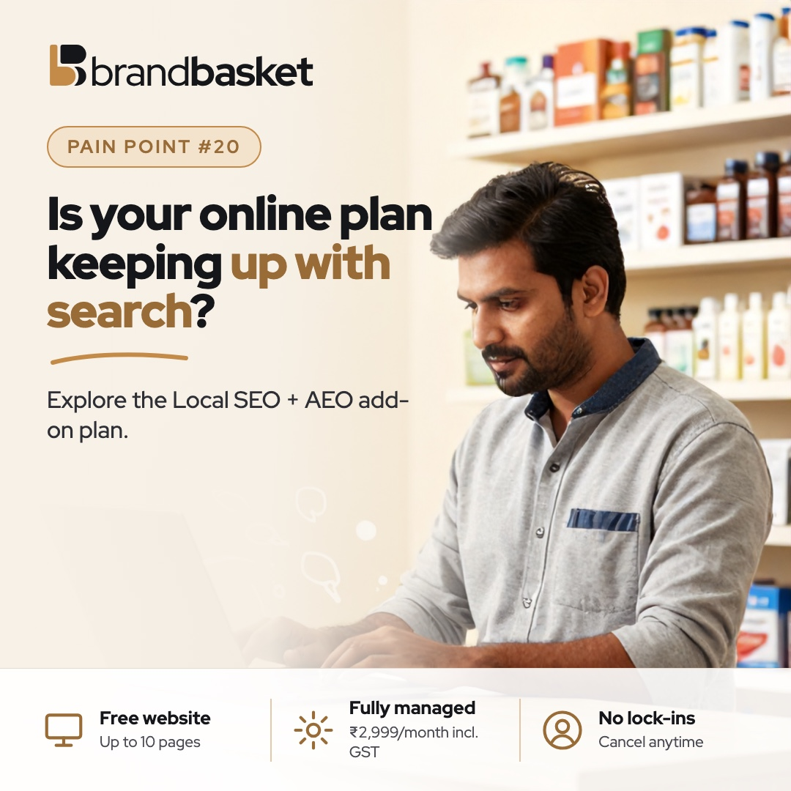
w02-d20 · 2026-11-24T10:00:00+05:30
A local business wants support to keep its online presence in mind as search tools evolve.
The way people look for local businesses keeps changing.
For an owner, it can be difficult to follow every new search term and decide whether extra support makes sense. A useful first step is knowing what service is available and what it costs, without expecting a guaranteed spot in search results.
Brandbasket offers a Local SEO + AEO add-on for ₹24,999 a month. The website build is ₹0, and the website care plan is ₹2,999 a month incl. GST. These are separate parts of the offer, so you can review what fits your business.
Start your free website at brandbasket.in (link in bio).
#SmallBusinessIndia #LocalSEO #AEO #ShopOwner #LocalBusiness #Brandbasket
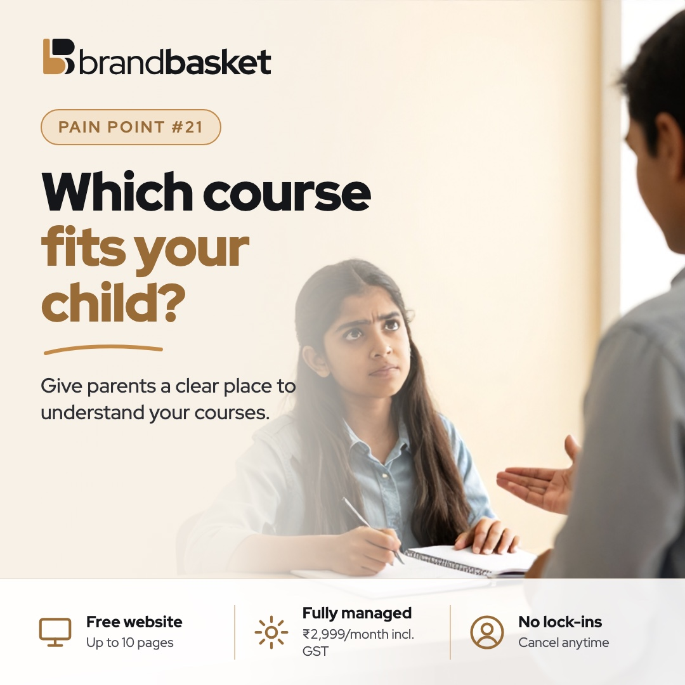
w02-d21 · 2026-11-25T10:00:00+05:30
Parents considering a coaching institute cannot tell which course level is right for their child before speaking to the owner.
“Which course should we choose?” It’s a fair question—and a long conversation to repeat with every parent.
A website can give your institute a dedicated place to explain course levels and who each one is for. Brandbasket builds professional websites for local businesses for ₹0, with up to 10 pages, and gets them live in 7 working days. Hosting, SSL, backups, security updates and uptime monitoring are covered for ₹2,999 a month incl. GST.
Start your free website at brandbasket.in (link in bio).
#CoachingInstitute #EducationBusiness #LocalBusinessIndia #CourseInformation #SmallBusinessWebsite #IndianEntrepreneurs #Brandbasket
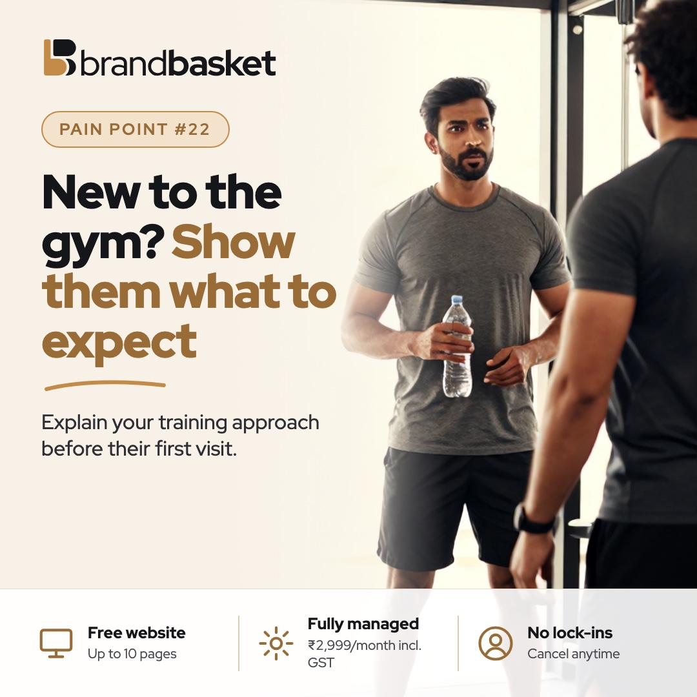
w02-d22 · 2026-11-26T10:00:00+05:30
People new to a gym may feel unsure whether the training environment is suitable for beginners.
“I’ve never joined a gym before. Will I know what to do?” A first visit can feel less intimidating when people have a clearer idea of the training environment.
Use your website to describe the kind of sessions you offer and what a new member can expect. Brandbasket builds websites for local businesses for ₹0, with up to 10 pages. Your site can include click-to-call, WhatsApp and enquiry forms, so people can choose how to get in touch. It’s live in 7 working days; hosting and security are ₹2,999 a month incl. GST.
Start your free website at brandbasket.in (link in bio).
#GymIndia #FitnessBusiness #LocalGym #SmallBusinessIndia #WebsiteForBusiness #IndianBusinessOwner #Brandbasket
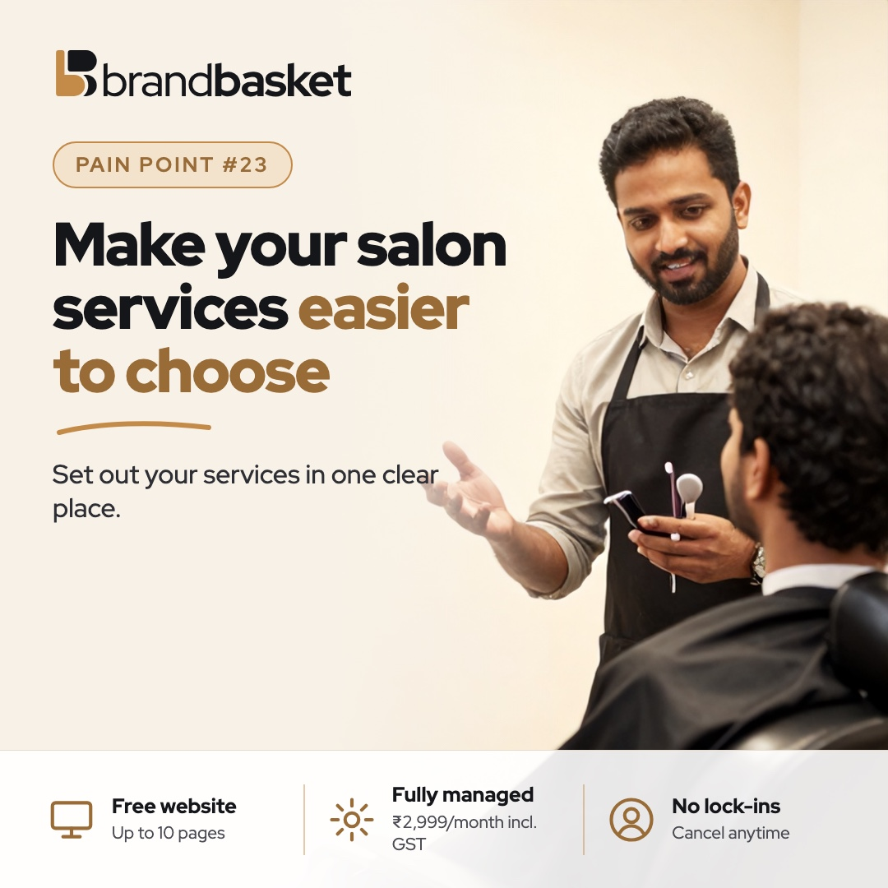
w02-d23 · 2026-11-27T10:00:00+05:30
A salon’s potential clients may not know what its different services involve before deciding what to book.
“I’m not sure which service to ask for.” When people can’t compare what a salon offers, it’s harder for them to arrive with a clear idea of what they want.
A website gives you room to describe your services in your own words, so visitors can look through the options before getting in touch. Brandbasket builds professional websites for local businesses for ₹0, with up to 10 pages, and gets them live in 7 working days. Hosting, SSL, backups, security updates and uptime monitoring are ₹2,999 a month incl. GST.
Start your free website at brandbasket.in (link in bio).
#SalonIndia #SalonBusiness #BeautyBusiness #LocalBusinessIndia #SmallBusinessWebsite #IndianEntrepreneurs #Brandbasket
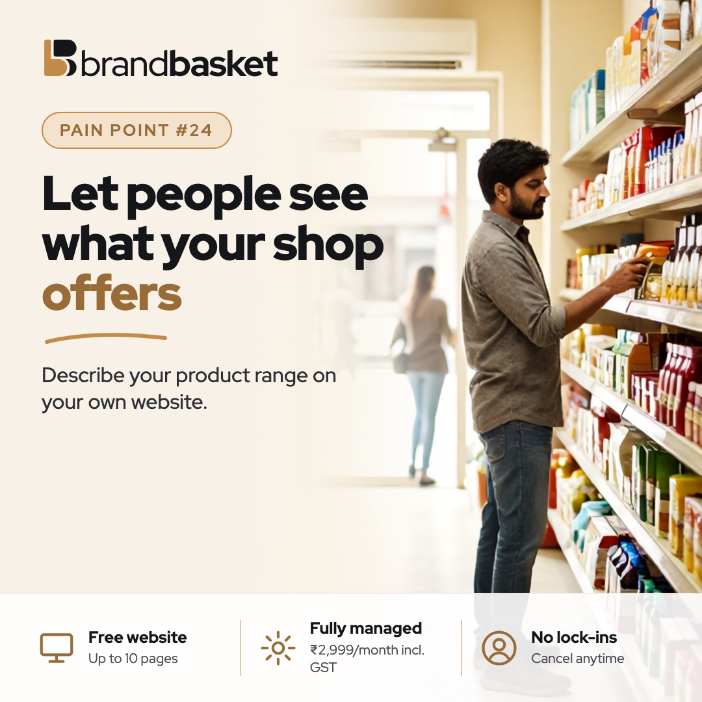
w02-d24 · 2026-11-28T10:00:00+05:30
A neighbourhood shop’s online presence may not give people a sense of the kinds of products they can find there.
“Do they have the kind of thing I need?” For a small shop, it can be useful to explain the product categories you carry before someone makes the trip.
A website gives your business a place to introduce its range in a way that suits your shop. Brandbasket builds websites for local businesses for ₹0, with up to 10 pages. Sites are live in 7 working days, and the ₹2,999 a month incl. GST plan covers hosting, SSL, backups, security updates and uptime monitoring.
Start your free website at brandbasket.in (link in bio).
#NeighbourhoodShop #SmallShopIndia #RetailBusiness #LocalBusinessIndia #IndianEntrepreneurs #SmallBusinessWebsite #Brandbasket
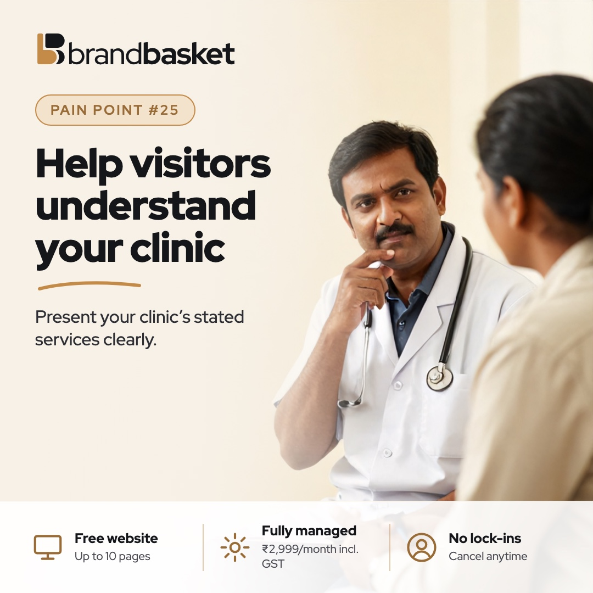
w02-d25 · 2026-11-29T10:00:00+05:30
People looking for a clinic may not know whether its stated services match the kind of care they are seeking.
“Is this the right clinic for what I’m looking for?” People often want to understand a clinic’s stated services before deciding whether to get in touch.
A website can present that information clearly, using the details your clinic provides. Brandbasket builds professional websites for local businesses for ₹0, with up to 10 pages, and gets them live in 7 working days. The monthly ₹2,999 incl. GST plan covers hosting, SSL, backups, security updates and uptime monitoring.
Start your free website at brandbasket.in (link in bio).
#ClinicIndia #DentalClinic #HealthcareBusiness #LocalBusinessIndia #ClinicWebsite #SmallBusinessIndia #Brandbasket
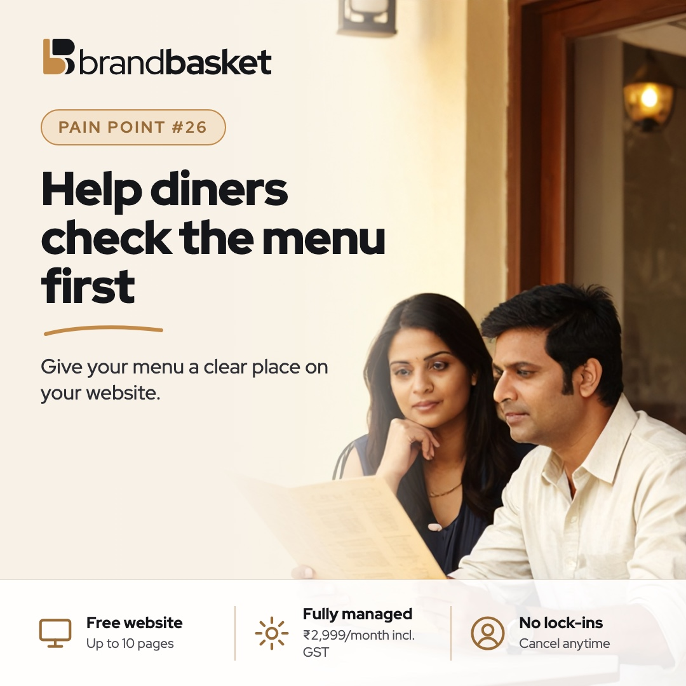
w02-d26 · 2026-11-30T10:00:00+05:30
Diners with dietary preferences may find it difficult to work out whether a restaurant’s menu suits them before arriving.
“Will I find something I can eat here?” Diners with dietary preferences may want to check a menu before choosing where to go.
A restaurant website gives you a place to present your menu and any details you choose to share. Brandbasket builds professional websites for local businesses for ₹0, with up to 10 pages. Your website can be live in 7 working days; hosting, SSL, backups, security updates and uptime monitoring are covered for ₹2,999 a month incl. GST.
Start your free website at brandbasket.in (link in bio).
#RestaurantIndia #RestaurantOwner #DiningOutIndia #LocalRestaurant #SmallBusinessWebsite #IndianBusiness #Brandbasket
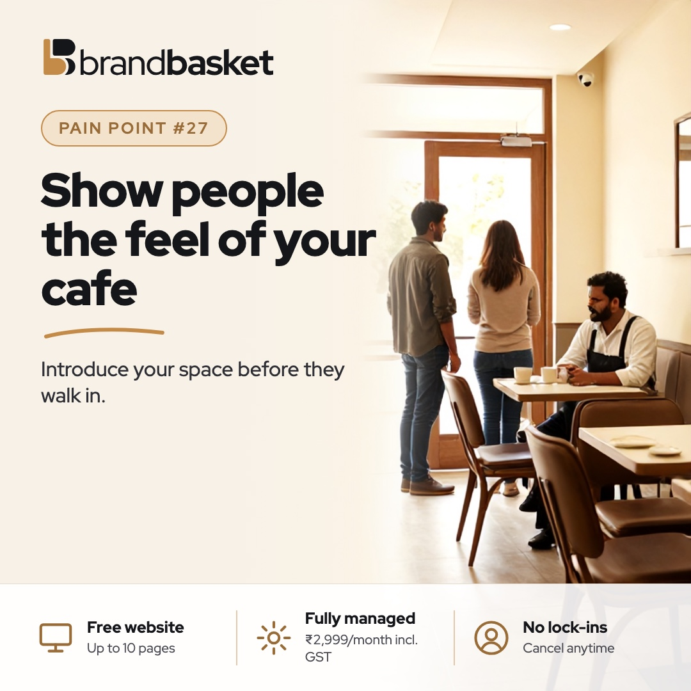
w02-d27 · 2026-12-01T10:00:00+05:30
People interested in a cafe may not know whether it offers the atmosphere they want for a catch-up or a quiet break.
“Is this the kind of place where I can sit and unwind?” People choose cafes for more than a drink; the setting can matter too.
Use your website to introduce your cafe and describe the experience you want visitors to have. Brandbasket builds professional websites for local businesses for ₹0, with up to 10 pages, and gets them live in 7 working days. Hosting, SSL, backups, security updates and uptime monitoring are included for ₹2,999 a month incl. GST.
Start your free website at brandbasket.in (link in bio).
#CafeIndia #CafeOwner #IndianCafe #LocalBusinessIndia #SmallBusinessWebsite #HospitalityBusiness #Brandbasket
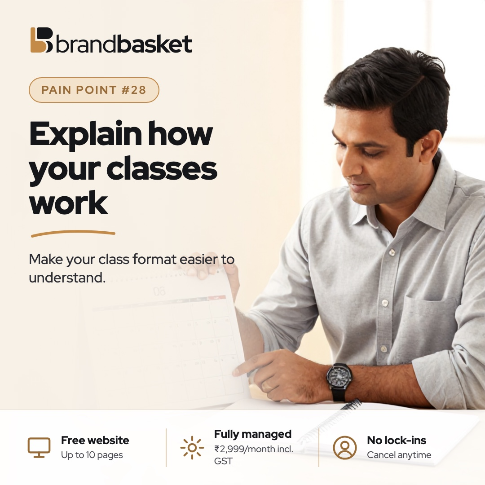
w02-d28 · 2026-12-02T10:00:00+05:30
Parents considering a coaching institute may want to understand how its classes are organised before enrolling.
“How often are the classes, and how are they organised?” Parents may want to understand the structure before deciding whether a coaching institute suits their family.
A website gives your institute a place to explain its class format and share the details you want families to know. Brandbasket builds websites for local businesses for ₹0, with up to 10 pages, and gets them live in 7 working days. Hosting, SSL, backups, security updates and uptime monitoring are ₹2,999 a month incl. GST.
Start your free website at brandbasket.in (link in bio).
#CoachingClasses #EducationIndia #CoachingBusiness #LocalBusinessIndia #SmallBusinessWebsite #IndianBusinessOwner #Brandbasket
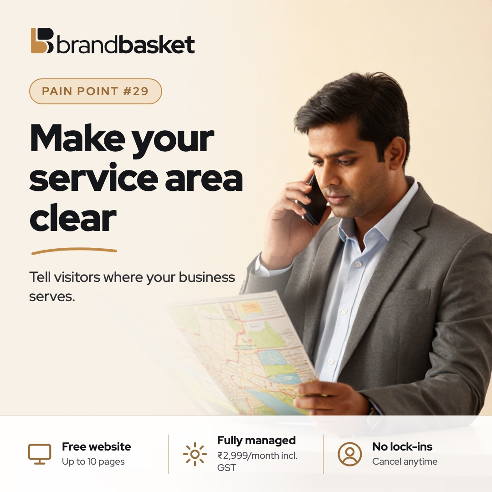
w02-d29 · 2026-12-03T10:00:00+05:30
A local business serving a defined area may receive enquiries from people who are too far away to visit.
“Do you serve my area?” If your business works within a particular part of town, someone outside that area may not know until they get in touch.
A website can clearly state the areas your business serves, helping visitors check whether you’re a fit before making an enquiry. Brandbasket builds websites for local businesses for ₹0, with up to 10 pages. Sites are live in 7 working days, and hosting, SSL, backups, security updates and uptime monitoring are ₹2,999 a month incl. GST.
Start your free website at brandbasket.in (link in bio).
#LocalBusinessIndia #ServiceArea #SmallBusinessIndia #IndianEntrepreneurs #BusinessWebsite #LocalServices #Brandbasket
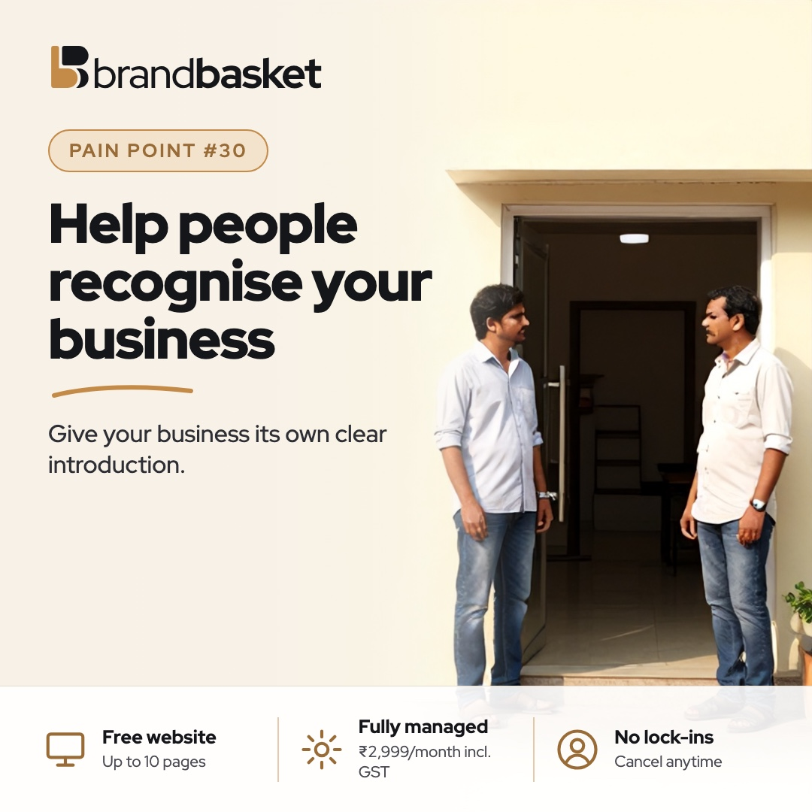
w02-d30 · 2026-12-04T10:00:00+05:30
A business known mainly by its name may not be easy to distinguish from other businesses with similar names.
“Is this the business I was looking for?” When names sound alike, a little more context can help people recognise which business is yours.
A professional website gives you a place to introduce your business, its location and the services or products you choose to describe. Brandbasket builds local business websites for ₹0, with up to 10 pages, and gets them live in 7 working days. Hosting, SSL, backups, security updates and uptime monitoring are covered for ₹2,999 a month incl. GST.
Start your free website at brandbasket.in (link in bio).
#SmallBusinessIndia #LocalBusiness #IndianEntrepreneurs #BusinessIdentity #WebsiteForBusiness #LocalShop #Brandbasket